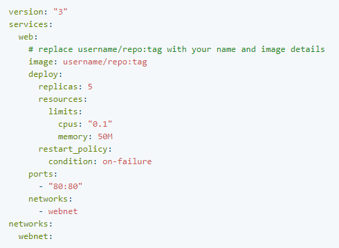

- java.lang.Object
-
- docker.ServiceCommand
-
public class ServiceCommand extends java.lang.Objecthttps://docs.docker.com/get-started/part3/#about-services!
In a distributed application, different pieces of the app are called services.
For example, if you imagine a video sharing site, it probably includes a service for
storing application data in a database, a service for video transcoding in the background
after a user uploads something, a service for the front-end, and so on.
Services are really just containers in production.
A service only runs one image, but it codifies the way that image runs what ports it should use,
how many replicas of the container should run so the service has the capacity it needs, and so on.
Scaling a service changes the number of container instances running that piece of software,
assigning more computing resources to the service in the process.
Luckily it's very easy to define, run, and scale services with the Docker
platform just write a docker-compose.yml file.
Common command Docker
- Since:
- 2014-03-31
-
-
Field Summary
Fields Modifier and Type Field and Description java.lang.StringCommon_Command_Service_DockerDetail - Common Commanddocker stack ls # List stacks or apps docker stack deploy -c <composefile> <appname> # Run the specified Compose file docker service ls # List running services associated with an app docker service ps <service> # List tasks associated with an app docker inspect <task or container> # Inspect task or container docker container ls -q # List container IDs docker stack rm <appname> # Tear down an application docker swarm leave --force # Take down a single node swarm from the managerjava.lang.StringRun_Scale_Service_With_The_Docker_PlatformRun, and scale services with the Docker platform
-
Constructor Summary
Constructors Constructor and Description ServiceCommand()
-
-
-
Field Detail
-
Common_Command_Service_Docker
public java.lang.String Common_Command_Service_Docker
Detail - Common Commanddocker stack ls # List stacks or apps docker stack deploy -c <composefile> <appname> # Run the specified Compose file docker service ls # List running services associated with an app docker service ps <service> # List tasks associated with an app docker inspect <task or container> # Inspect task or container docker container ls -q # List container IDs docker stack rm <appname> # Tear down an application docker swarm leave --force # Take down a single node swarm from the manager
-
Run_Scale_Service_With_The_Docker_Platform
public java.lang.String Run_Scale_Service_With_The_Docker_Platform
Run, and scale services with the Docker platform
Your first docker-compose.yml file

This
docker-compose.ymlfile tells Docker to do the following:-
Pull the image we uploaded in step 2 from the registry.
-
Run 5 instances of that image as a service called
web, limiting each one to use, at most, 10% of the CPU (across all cores), and 50MB of RAM. -
Immediately restart containers if one fails.
-
Map port 80 on the host to
web’s port 80. -
Instruct
web’s containers to share port 80 via a load-balanced network calledwebnet. (Internally, the containers themselves publish toweb’s port 80 at an ephemeral port.) -
Define the
webnetnetwork with the default settings (which is a load-balanced overlay network).
Run your new load-balanced app
Before we can use the
docker stack deploycommand we first run:docker swarm initNow let’s run it. You need to give your app a name. Here, it is set to
getstartedlab:docker stack deploy -c docker-compose.yml getstartedlabOur single service stack is running 5 container instances of our deployed image on one host. Let’s investigate.
Get the service ID for the one service in our application:
docker service lsLook for output for the
webservice, prepended with your app name. If you named it the same as shown in this example, the name isgetstartedlab_web. The service ID is listed as well, along with the number of replicas, image name, and exposed ports.A single container running in a service is called a task. Tasks are given unique IDs that numerically increment, up to the number of
replicasyou defined indocker-compose.yml. List the tasks for your service:docker service ps getstartedlab_webTasks also show up if you just list all the containers on your system, though that is not filtered by service:
docker container ls -qYou can run
curl -4 http://localhostseveral times in a row, or go to that URL in your browser and hit refresh a few times.
Scale the app

-
-
-